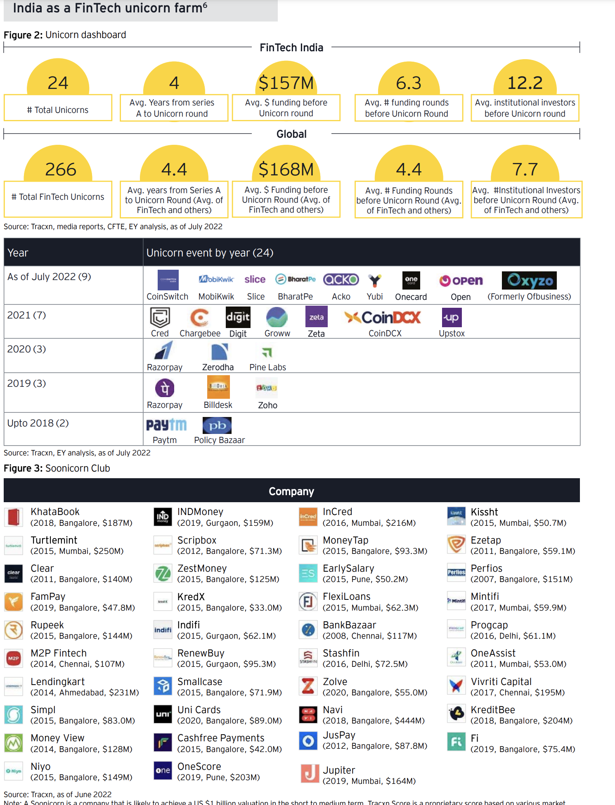

← back to home
links at the top https://github.com/iSPIRT
https://indiastack.org/payments.html
------------------------------
JAM - JanDhan, Aadhar, Mobile
digital public goods - AA, OCEN, UPI
cross selling in fintech
motivation on role of fintech: FinTech has greatly disrupted the way people and businesses interact with financial services. They
can solve problems of access, reduce friction between customers and financial institutions, and
attract capital to India. They bring in a tremendous amount of flexibility, and the ability to bundle
and unbundle products and specialize in areas where there is a gap. The accelerated development
of fintech players has facilitated speeding up financial inclusion and new-age advances in
technologies will additionally animate digital adoption or reception in the nation, helping both the
business industry and the consumers.
they say, millenians now make up most of the market and are the main consumer base.
fintech companies capitalised on the rising demand for digitization of financial services during covid-19.
banking
landing
insurance
trading
investing industries
they also say, Another critical inhibitor of sustainability and growth of FinTech is the availability of FinTech
talent. Amongst a high churn rate, finding resources who are skilled on implementing
emerging technologies is a herculean task for FinTech looking to scale fast and reduce timeto-market.
OCEN and ONDC initiatives will
reform ecommerce and build world’s most comprehensive digital public-goods infrastructure.
consumer and SME credit acess and good participiation of retail investors in stock market are good signs, says that Indian fintech is going in correct direction.
good going,
nurturing initiatives by government
initiatives by regulators
buoyed funding environment
strengthening VC ecosystem
massive demographic opportunities
high FinTech adoption
access to technology
talent for entrepreneurs building for India
traditional finance firms are creating symbiotic relations that leverage the willingness toward secured data sharing and monetization.
not so good things,(thoughts, each of these has solutions and that's what creats opportunity. can't control big geopolitical events but others have solutions )
data security and privacy risks
variad adoption of digital financial services across demographic groups,
a dearth of financial literacy and awareness
IPO underperformance
global geopolitical and macro-economic events
Traditional financial services's underpenetration in rural areas.
fancy term, wealthtech
wealthtechs are democratising alternative investments for retail investors. <<<<<<<------------
of course, From payments to investments and lending,
embedded solutions are penetrating every aspect of financial
services.
fancy term, MOBILE MONEY
bundle of fancy terms, From mobile money to services like BNPL, crossborder transactions, mobile wallets, and payment orchestration,
FinTech players like (Visa, Klarna, and PayPal) are playing an
important role in increasing the banked population around
the world.
super apps i.e multi purpose apps
Payments, lending, investment advisory, insurance advisory
and distribution, and several other services that traditionally
required physical/ in-person interfaces are now the fundamental
offerings of the contactless, remote, and digital-native FinTech
landscape.

---------------------------------------
there exist white-label robo-advisors.
e.g https://www.investsuite.com/vision
there's somthing called regTech.
regulatory tech. involves the implementation of digital tools and processes that improve the way organizations manage their increasing regulatory compliance commitments.
^^^this is nice.
e.g IRIS Business Services Limited
why build all this when you can outsource, contract etc.
not ethical tho
why. cuz NOLOGO
paytech is consolidating
need to read this
and GIFT City is another thing to keep an eye on
fancy, GIFT-IFSC granted
authorization certificates to five FinTech firms, including
CropData, EdgeVerve, Signzy Tech, UMBO IDTech (Riskcovry),
and Qkrishi Quantum, in July 2022. The FinTech firms will
bring operations in areas and sectors like agritech, blockchainpowered solutions, unified KYC solutions and customer
onboarding digital infrastructure, insurance distribution
solutions, and deep-tech quantum-based algorithms. IFSCA
additionally exchanged an MoU, with the Department of Space
(DoS), GoI, to unlock the large alternative of convergence
between FinTech and SpaceTech.
These initiatives have streamlined the governance process,
leading to accurate and timely reporting, which is the backbone
of governance and RegTechs have been helping industry players
become better at this.
TailWinds
business environment: access to capital, regulatory stance
Technology & Talent: access to skilled talent. (they also say, tech-enabled industry collaborations, emerging tech adoption)
demand and growth enablers: high adption, large underserved market, account aggregation and data sharing
neobanking, insurtech from nascent stage to promising critical mass adoption
Tech enabled industry collaborations
Fintech startups have partnership route to go to market, and it's also welcomed by banks.
emerging tech: blockchain, e-KYC, video KYC, IoT, AI, digital signatures and so on are creating underlying infrastructure for the future of digital-native financial services.
some oldest banking institutions in India and digital-native FinTech companies work alongside each other. but this must be saturated with connections and connected statups and founders.
Headwinds
- hyperpersonalised products
- newer way of distribution (doesn't have to be just in insurance and physical distribution.)
what is digital banking unit? 75. at lower level.
TODO: data on % of people perticipating in equity markets, in MFs, India vs USA and China and Europe
CHALLENGES
It is important to address that the next phase of payment growth in the country is likely to be driven by low-ticket payments, with tier-2 to tier-4 markets witnessing a surge
in demand. However, major roadblocks facing the digital payments ecosystem would be cash versus the cost of digital transactions, lack of awareness of digital alternatives, demand for digital alternatives in smaller towns, and perceived risk of increased tax liabilities for merchants.
Simplification of the process for payments with less ticket size: The average ticket size for UPI payments is $2.6 (INR 200)70 per transaction for ~50% of the transactions in FY21. The RBI has hence proposed to offer a simpler process flow by enabling small value transactions through a ‘One device’ wallet in UPI app, which will conserve banks’ system resources without any change in the transaction experience for the user
The growth in digital payments has strong implications for the banking sector. It is important to note that banks derive ~25%71 of the total fee income from cards and payments- related businesses. With the rapid growth of MDR on standard UPI P2M transactions, banks would slowly lose control of this lucrative non-interest income source.
PayTechs are looking to diversify and extend services beyond digital payments to achieve the long-term aim of profitability. Out of the densely populated market of PayTechs, the larger PayTechs are looking to utilize their wide customer base. They are applying for licenses to distribute mutual funds, become account aggregators, and offer insurance to gain new lines of revenue.
As seen in other Asian markets, India too is likely to end up with a very small number of players dominating the space. However, some industries will take precedence when it comes to the initial adoption and penetration of these apps. “Embedded finance”—one of the foremost themes of India’s FinTech story going forward— work successfully with further potential to unlock vast growth opportunities for specific target segments, such as Gen Z, millennials, or small business niches72.
start from page 23.
-----------------------------------------
TODOs
1. AA account aggregator
2. OCEN open credit enablement network
3. link GST notes